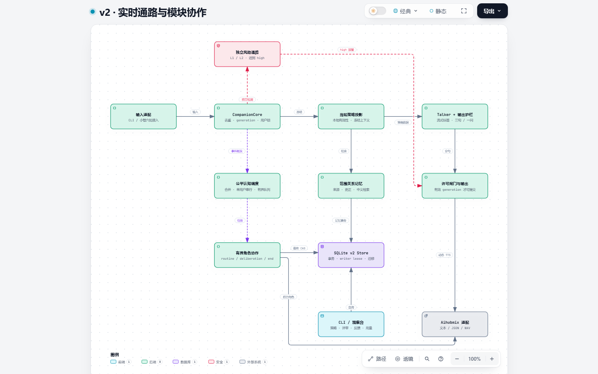

四张图解释实际模块、控制条件、数据契约和恢复机制。每个节点附源码依据，支持关系追踪、主题切换和导出。
e3ef674820ee25c4873b4a9658a2a980060aa922
Core、冻结策略、Talker、独立风险、认知调度和输出责任。
独立 Brief、一次修订、共享预算、DeltaGuard、最终 CAS 和部分提交。
四类记忆、来源、更正链、边界范围、反馈、迁移和恢复。
下一句预取、generation 取消、固定接管、许可回调和分段延迟。
